Teacher Guide
Everything you need to know about using your Adhyora teacher portal.
Getting Started
Before accessing your portal, you must register using a Room Code provided by your Head of Department, and be approved by the Principal.
1. The Main Gateway
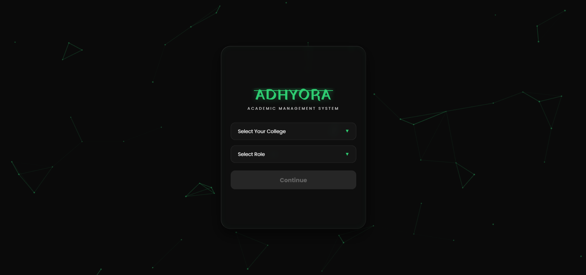
- Select Your College: Choose your institution from the dropdown.
- Select Role: Choose Teacher.
- Click Continue.
2. Teacher Registration & Sign-In (Room Code Required)
- Room Code: Both Registration and Sign-In require a 6-digit Room Code. This is generated by the Principal and given to you by your HOD.
- The Room Code maps you automatically to the correct department in the database.
- After registering, your account is Pending until the Principal approves it. You cannot access the dashboard until approved.
Teacher Portal Guide
Welcome to the Adhyora Teacher Dashboard. This portal equips faculty with powerful tools to manage daily attendance, monitor student records, and handle substitute duties efficiently.
First-Time Login & Security Setup
When you log into the Teacher Portal for the first time, you must complete a brief security and configuration workflow.
1. Account Approval
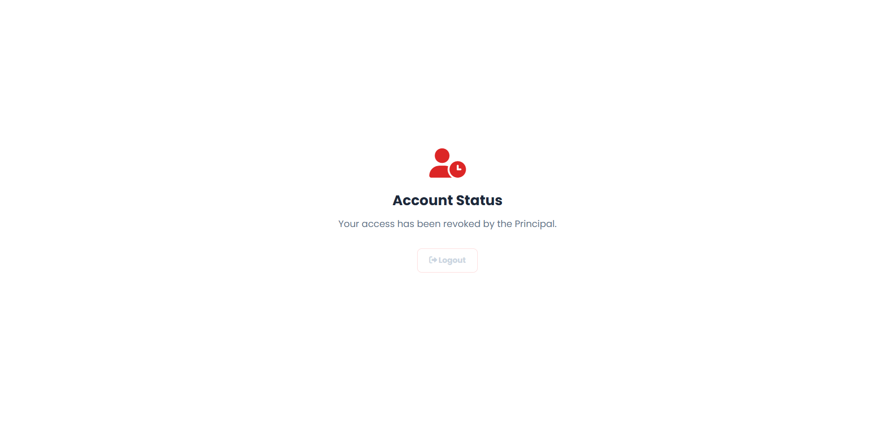
- Upon entering your roomcode and signing in, your account is placed in a Pending state.
- You cannot access the dashboard until the Principal officially approves your account. Once approved, this screen will automatically disappear.
2. Security PIN & Biometrics
To protect sensitive academic data, you are required to set up a secure lock screen.
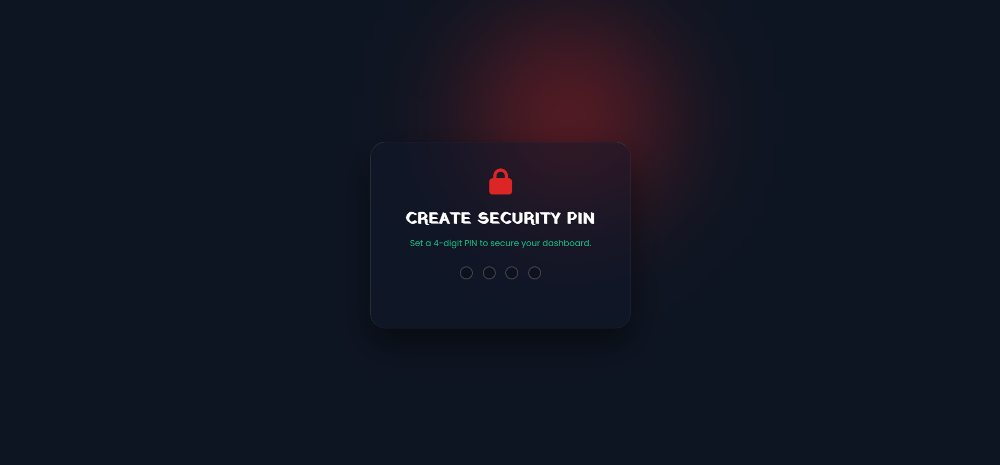
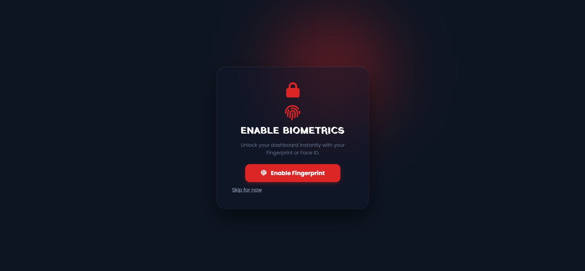
- Create PIN: Enter a secure 4-digit PIN, then re-enter it to confirm. You will use this PIN as an extra layer of security to unlock the app on future visits.
- Enable Biometrics: After setting the PIN, you can optionally link your device's fingerprint or Face ID for faster logins. You can click "Skip for now" and enable it later from your Settings.
3. The Initial Workflow
Once your security is set up, follow these steps to configure your teaching profile:
- Step 1 (All Teachers): The app will prompt you to declare the subjects you are teaching. Go to the My Subjects Declaration panel to add them.
- Step 2 (HODs Only): If you are the Head of Department, navigate to the Student Subject Allocation panel to assign students to their respective elective and core subjects.
- Step 3 (HODs Only): Finally, map your department's teachers to the Principal's master structure using the Timetable & Allocations panel.
Navigation Bar
The Global Navigation Bar provides instant access to core system tools from anywhere in the app. On a PC or laptop, this bar is locked to the top right corner of the screen. On mobile devices (Android/iOS), it is anchored to the bottom of the screen for easy thumb access.
My Dashboard
Clicking the Dashboard Icon (first icon) in your navigation bar opens your primary analytics screen. This provides a comprehensive overview of your workload and teaching history.
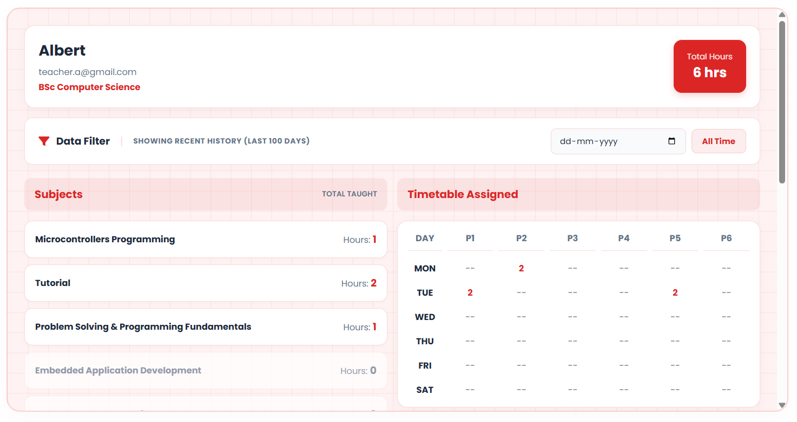
1. Profile & Workload Statistics
- Profile Details: The top left displays your Name, verified Email Address, and Department.
- Total Hours: The red box on the top right tracks the absolute total number of hours (periods) you have taught based on your submitted records.
- Subject Breakdown: The left panel itemizes your total hours taught per subject. Subjects that you haven't taught yet will appear faded out with zero hours.
2. Data Filters & Timetable
- Date Picker: Use the calendar input to select a specific date. The dashboard will dynamically recalculate to show exactly which subjects and how many hours you taught on that specific day.
- All Time: Click this button to reset the filter and view your cumulative teaching history.
- Assigned Timetable: The right panel visually maps out your weekly schedule. It shows the days of the week, the period numbers, and displays the Semester Number assigned to you for each slot.
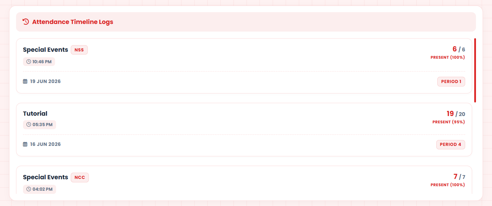
3. Attendance Timeline Logs
Scroll down the dashboard to view your complete, chronological audit trail.
- Every single time you successfully save an attendance register, a new log card is generated here automatically.
- Each log displays the Subject Name (and specific Event tag if you approved an event), the exact Time and Date you submitted it, the Period Number, and the total ratio of Present vs. Total Students for that class.
Daily Attendance Marking
The core function of the Teacher Portal is the Live Attendance Engine. Here, faculty can mark attendance for their scheduled classes or act as a substitute for colleagues.
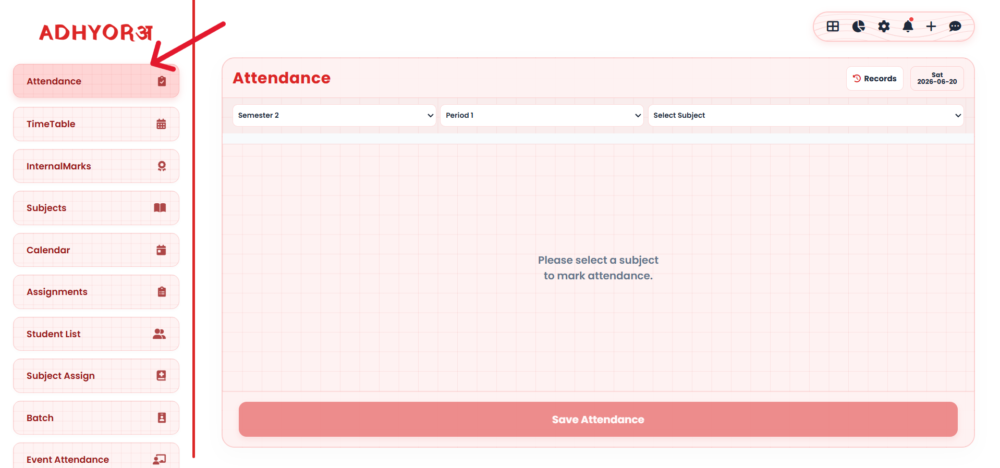
1. Selecting the Class
- Date Selection: By default, the panel loads today's date. Click the date at the top to open the Date Picker if you need to jump to a previous day to view or edit past records.
- Period & Subject: Select the Semester, Period, and Subject. The dropdown intelligently filters to only show subjects assigned to you for that specific semester.
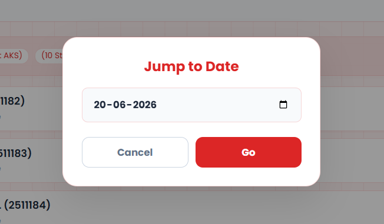
2. Marking the Register
Once a subject is loaded, the student roster will appear. If the class is divided into batches, you will see your specific batch loaded automatically.
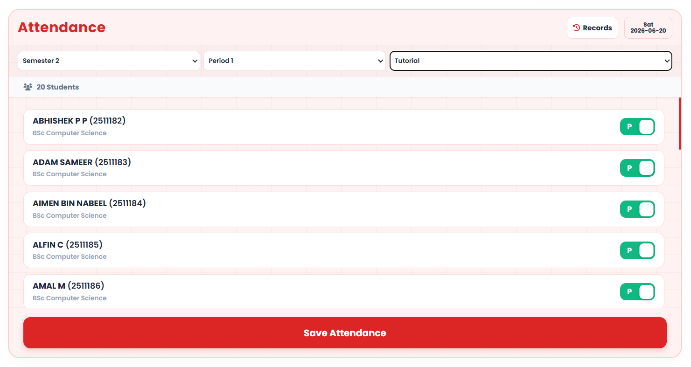
- Default State: All students are marked Present (Green) by default to save time.
- Toggle Absentees: Simply tap or click a student's card to toggle them to Absent (Red).
- Save: Click the Save Attendance button at the bottom of the screen. A secure cloud queue modal will appear, confirming when the data is synced.
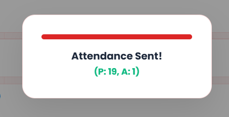
3. Substitute Teacher Mode
Substituting means a colleague who normally teaches a class is absent (or otherwise unavailable), so another teacher steps in and marks attendance for that period on their behalf. How this shows up on your screen depends on whether the subject is split into batches or not.
A. Unsplit Subject (Single Class, No Batches)
- If the subject for that period is not divided into batches and the assigned teacher is absent, simply open the app, select that same Date, Period, and Subject as usual.
- Even if the subject isn't split into batches, it's still assigned to a specific teacher. So if another teacher who also teaches that subject opens that same Date, Period, and Subject, the whole class appears as a single 'Entire Class' substitute card labeled with the assigned teacher's name and student count — click it, confirm Substitute Mode, and the full roster loads for you to mark and save.
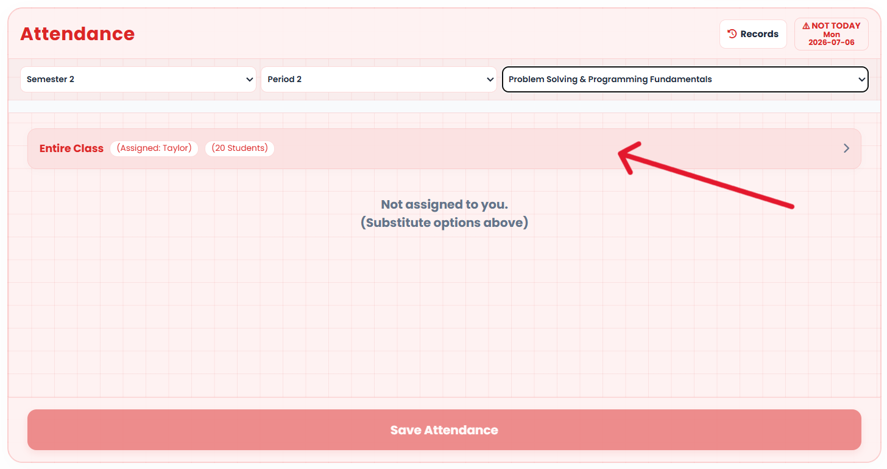
B. Split Subject (Multiple Batches)
- If the subject is split into two (or more) batches, your own assigned batch loads directly as your normal roster — nothing changes for you there.
- Every other batch of that same subject appears as a separate Substitute Card underneath your roster, clearly labelled with its batch name and the teacher it's assigned to.
- Click any Substitute Card to open it. A warning popup appears asking you to confirm you're entering Substitute Mode for that batch.
- Click Yes to load that batch's students and mark their attendance too — useful if that batch's own teacher is on leave, or if you (as Batch 1's teacher) want to combine and personally teach/mark Batch 2 as well.
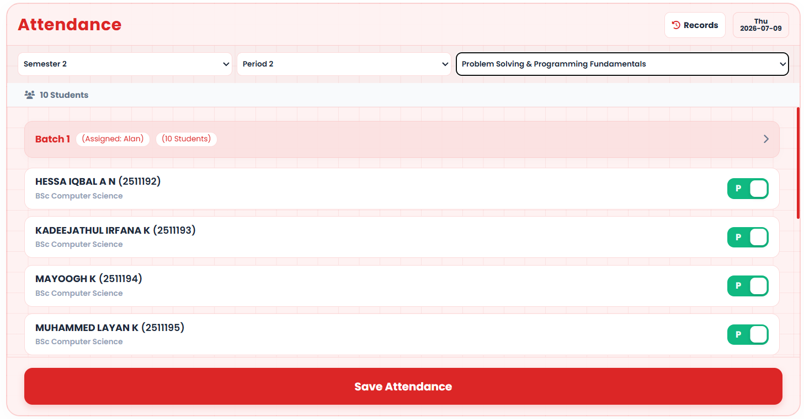
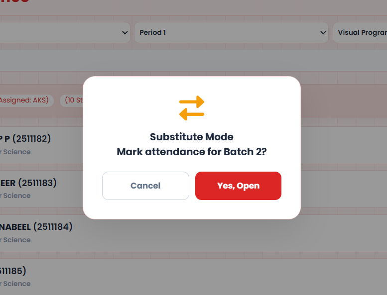
- Ownership Lock: Once a teacher marks a period, they "own" that record. Only the teacher who originally marked the attendance can edit it later. The system permanently records who marked it.
- Double Booking Prevention: The system blocks multiple teachers from marking the same period for the same students.
- Shared Subjects (Strict): General subjects (like AECC, VAC) strictly follow the Principal's timetable. You cannot mark them if you are not assigned.
- Department Subjects (Flexible): Core/Major subjects are flexible. Teacher B can substitute Teacher A's 1st period without the Principal needing to officially reassign the timetable.
4. Marking Attendance in a Multi-Section Department
If your department has been split into Sections (e.g. Section A, Section B) for a given year, a red Section dropdown appears just below the Semester/Period/Subject selectors the moment you pick a subject that has more than one section active.
- Shared (All Sections): The top option in the dropdown. Select this for subjects (like MLD, AECC, VAC) that are timetabled once for the whole year rather than per-section.
- Section A / Section B / etc.: Selecting a specific section loads that section's roster only. The dropdown defaults to whichever section you're already assigned to teach for that period; switch it manually if you need to re-check a past date or step in for a section that isn't yours yet.
- For subjects that aren't split by section (MJD, MID, SEC, Core, Tutorial), the dropdown still lets you jump directly into any section's class proactively, without waiting for a Substitute Card to appear.
- A teacher can be legitimately assigned to teach the same subject to multiple sections in the same period (e.g. you personally teach both Section A and Section B back-to-back). Marking one section's register never blocks or overwrites the other section's — each is tracked and saved completely independently.
Attendance History & Records
Teachers can review their past submissions and see exactly what was recorded for any given day using the Records panel.
- Click the History/Records (Clock) Icon at the top right of the attendance screen.
- Select the date and semester. The system will display all periods marked by you (or your department) on that day.
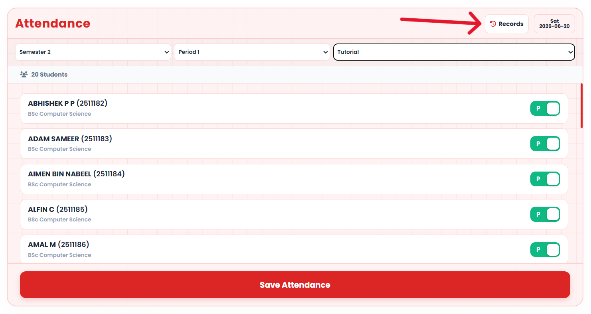
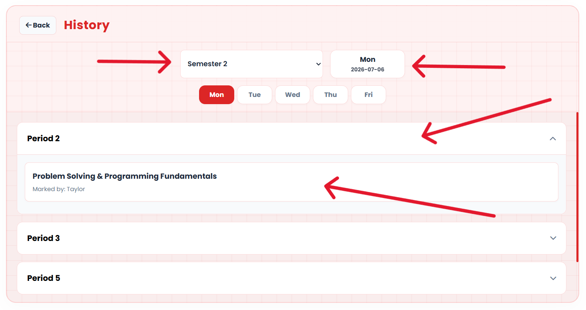
- Detailed View: Click on any period card to open the Time Capsule Viewer.
- This view displays the exact list of students, clearly showing who was marked Present (P) or Absent (A), along with the overall statistics for that specific class.
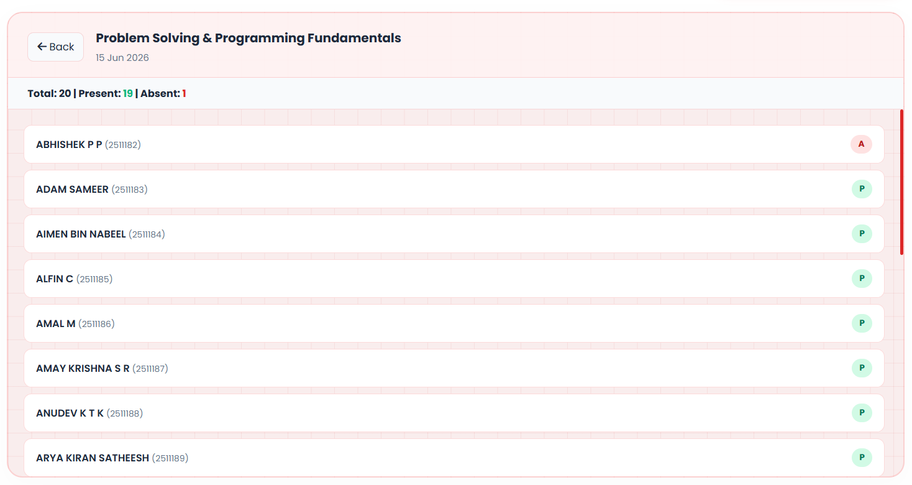
Timetable & Allocations (HOD)
The Timetable panel provides a complete visual breakdown of your daily class schedule. For standard teachers, this is a read-only viewer. However, if the Principal has granted you HOD (Head of Department) privileges, you will also have access to the Assignment Engine.
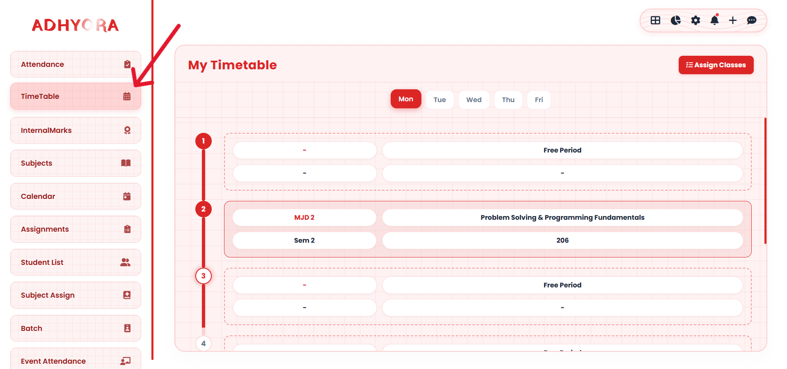
1. My Timetable (Teacher View)
- Daily Layout: Switch between days using the Mon-Fri buttons at the top. The grid displays all periods for the day.
- Class Details: Assigned periods show the Subject Category, Subject Name, Semester, and Room. Free periods remain blank.
- Section Badges: In a multi-section department, a period card shows a red Section badge above the class details. If you teach the same subject to more than one section in that same period (e.g. Section A and Section B back-to-back), all the relevant section badges appear together on that one card.
- Live Visual Tracker: The timeline on the left side (red vertical line) fills up dynamically to indicate the current physical time of the day relative to your scheduled classes.
- HOD Access: If you are an HOD, you will see a red Assign Classes button in the top right corner.
Department Timetable Assignment
Clicking the Assign Classes button opens the master configuration panel for your department. The period boxes displayed here are generated based on the Principal's foundational structure.
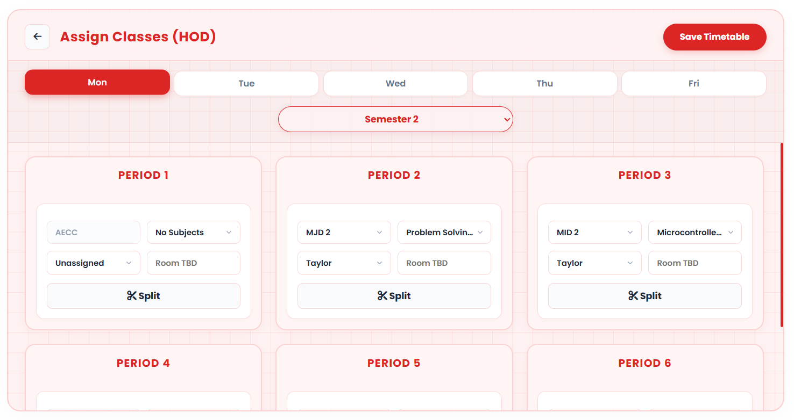
1. Assigning Subjects & Faculty
- Category Locking: Categories for "Shared Subjects" (e.g., AECC, VAC, SEC) are locked by the Principal and cannot be changed. However, for "Department Core" subjects (e.g., MJD, Tutorial), the HOD has the flexibility to override the category type using the dropdown.
- Select Subject: Choose the specific subject being taught in this period. Note: You only need to assign timetable slots for subjects officially offered by your own department.
- Select Teacher: Pick the faculty member who will teach this class.
Crucial Rule: A teacher's name will only appear in this dropdown if they have logged into their app and actively added this subject to their personal "Subject List". - Assign Room: Enter the physical room name or number (optional).
2. Editing by Section (Multi-Section Departments)
If your department has Sections created for a given year (see Manage Sections), a red Section dropdown appears next to the Semester selector at the top of the Assign Classes panel.
- Shared (All Sections): The default view. Use this for subjects common to the whole year, like MLD. This is exactly how the timetable behaved before sections existed.
- Section A / Section B / etc.: Switch to a specific section to build a timetable just for that section's students. Splitting a class here only divides that section's enrolled students into batches — the other sections are untouched.
- Ownership Locking: Whichever side — Shared or a specific section — gets a real teacher assigned to a period first "owns" that period. If Shared already has a teacher for a period, that period locks for every section (with a message telling you to switch to "Shared (All Sections)" instead). Likewise, if a specific section already has a teacher for a period, the Shared row for that same period locks. Two different sections both independently using the same period is always fine and never locks anything — only a Shared-vs-section clash does.
- Forced-Shared Categories: Categories like MLD, AECC, and VAC must always be set under "Shared (All Sections)" — the dropdown is disabled for these while a specific section is selected. MID is the one exception: it can be set either as Shared or per-section, since some colleges run it either way.
3. Splitting Classes into Batches
If a class needs to be taught by multiple teachers or separated for lab work, click the Split button at the bottom of a period card.
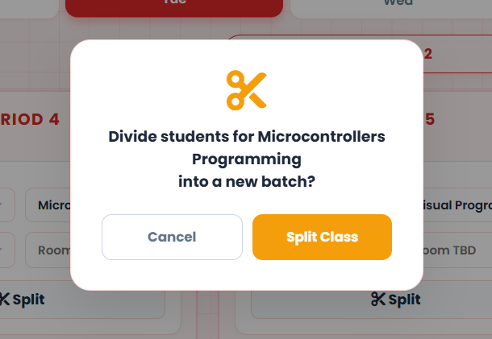
A. Department Core Split: For core subjects, the system will automatically divide the enrolled students evenly into new batches.
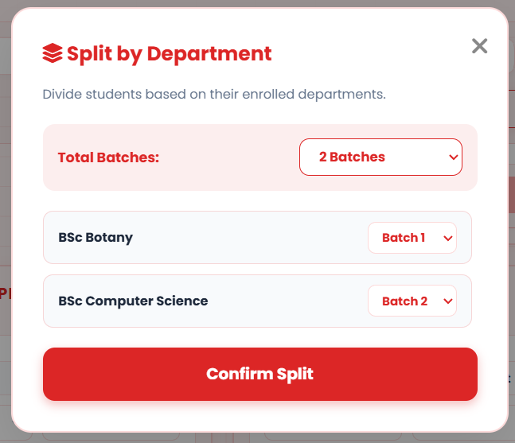
B. Shared Subject Split: For shared subjects containing students from multiple departments, a modal will appear. Select the total number of batches required, and meticulously map each participating department to its correct batch.
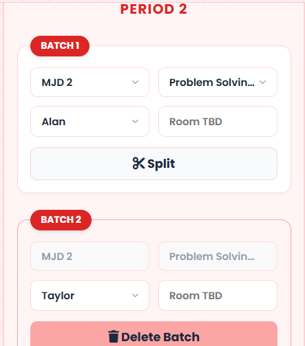
- Configuring Split Batches: Once a split is confirmed, the period card will divide into multiple, independent batch boxes (e.g., Batch 1, Batch 2). You can now assign a different Teacher and Room to each specific batch.
- Batch Persistence: Once a subject is split into batches, that division is remembered globally for that semester (and, in a multi-section department, specifically for whichever section you were editing). If you schedule the same subject on a different day (e.g., Tuesday), it will automatically appear as split boxes. Simply re-assign the exact same teachers to their respective batches on the new day.
When you have finished configuring the day's schedule, you must click the red Save Timetable button in the top right corner. The system will securely encrypt and push the updated schedule to all students and faculty instantly.
Internal Marks Entry
The Internal Marks panel is designed to streamline the grading process for your assigned subjects. The system intelligently auto-calculates attendance scores and organizes your class lists perfectly, even for complex batch configurations.
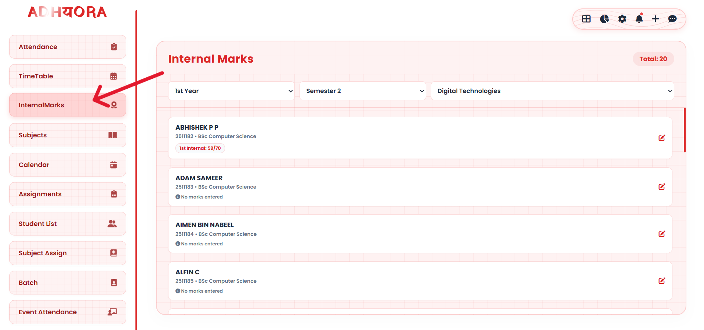
1. Navigating Subjects & Batches
- Select Academic Year: Use the first dropdown to select the target year (e.g., 1st Year). The Semester dropdown will automatically update to the current active semester for that year.
- Select Subject: The final dropdown will populate only with the subjects you teach for that specific semester. Select a subject to load the student roster.
- Batched Subjects: If the selected subject is divided into practical batches, the system will group the students accordingly into distinct Batch Cards. Click a batch card to expand it and reveal the assigned students.
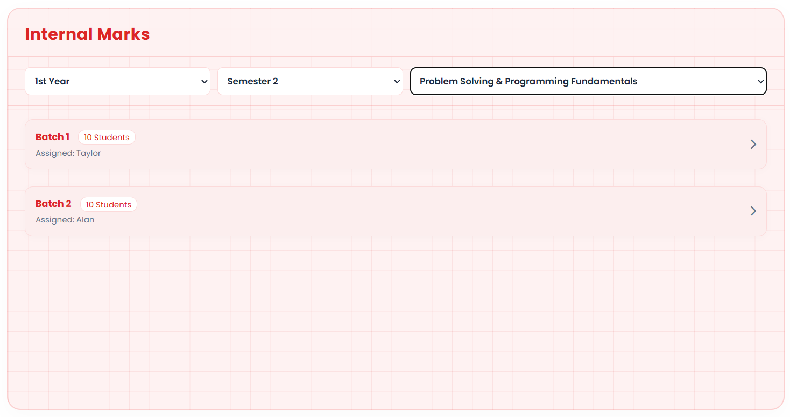
2. Recording Grades
Click on any student's name card to open their individual grading sheet.
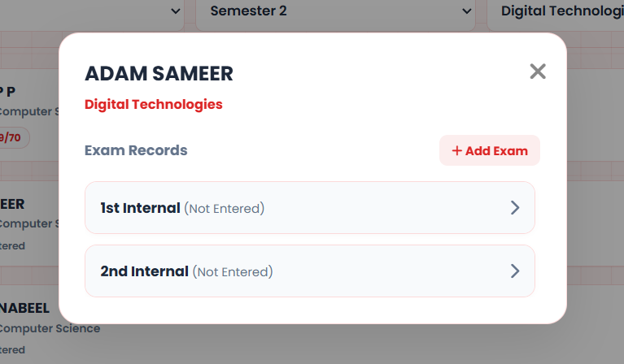
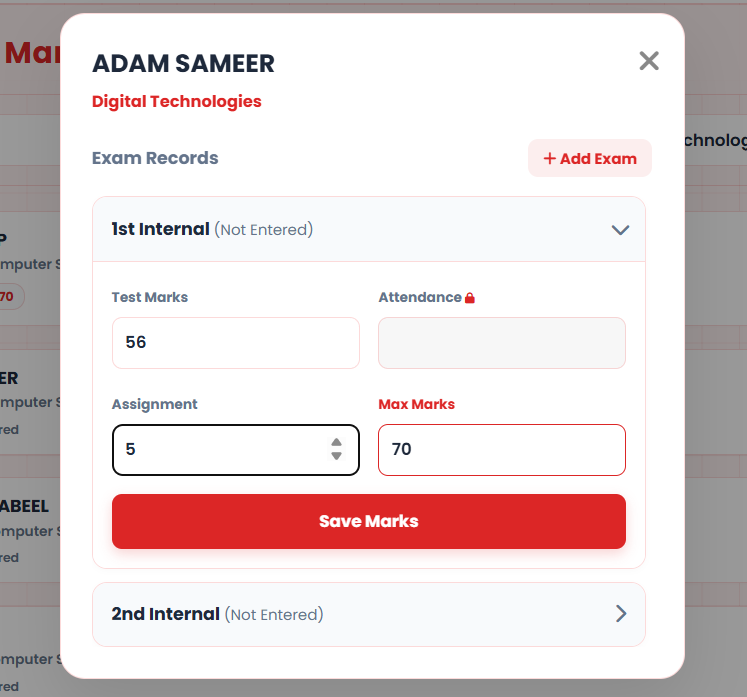
- Select Exam: By default, the system provides standard slots like 1st Internal and 2nd Internal. Click the accordion to expand the input fields.
- Enter Scores: Input the maximum marks (Max Marks), the test marks obtained, and the assignment marks.
- Automated Attendance Marks: You cannot manually edit the Attendance mark field. The Adhyora engine automatically locks and calculates this score out of 5 based on the student's real-time attendance percentage for this specific subject.
- Add Custom Exams: If you need to record additional assessments, click the red + Add Exam button to dynamically generate a new grading slot.
- Save: Click the red Save Marks button to instantly sync the grades to the cloud. Once saved, students can immediately view their updated progress bars in their own dashboard.
My Subjects Declaration
The Subjects panel is where you officially declare the courses you are teaching. This step is critical—the subjects you add here will automatically link to your Attendance, Internal Marks, and Timetable panels.
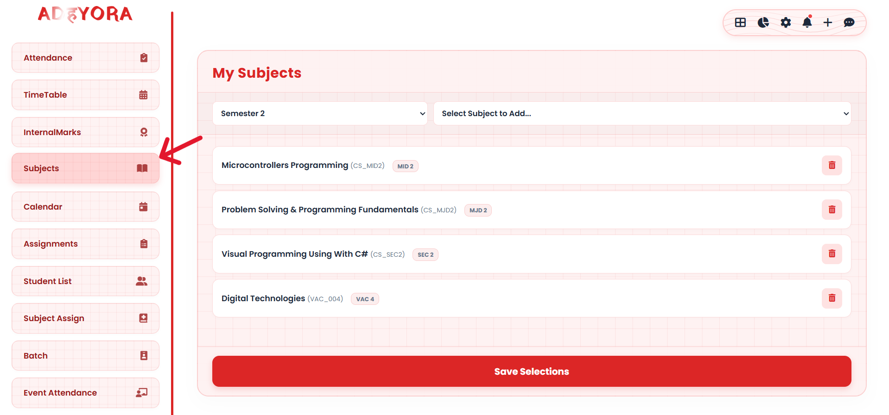
1. Adding Subjects
- Select Semester: Choose the target semester from the first dropdown.
- Select Subject: Click the second dropdown to view all available subjects offered by the college for that semester. Select the subjects you are going to teach.
- Unsaved Status: The selected subjects will appear on the main screen as pending additions.
- Save: You must click the red Save Selections button at the bottom of the screen to lock them into your profile.
- Repeat: Switch the semester dropdown and repeat this process for all other semesters you are teaching.
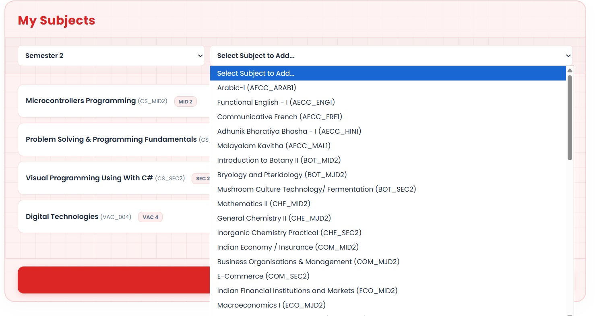
2. Deleting Subjects
- If a subject needs to be removed from your list (or if you added one by mistake), click the red Trash (Delete) button on the subject card.
- If the subject was already saved to the database, a confirmation popup will appear to ensure you want to remove it.
Academic Calendar
The Calendar provides a visual overview of your institution's working days, holidays, and semester schedules.
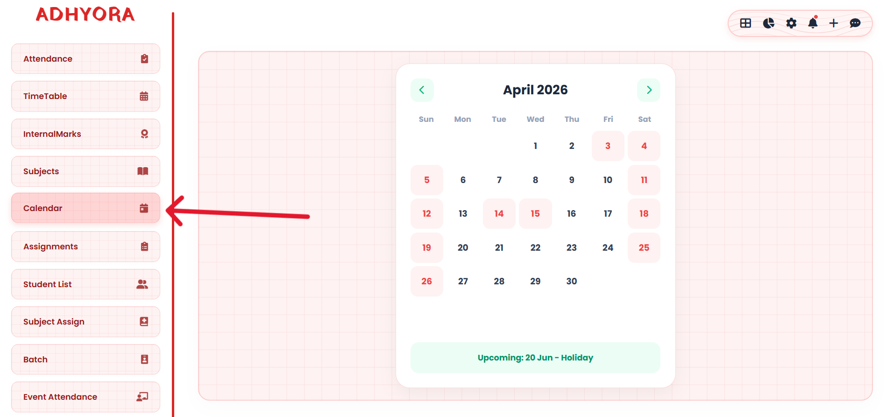
- Navigation: Use the left and right arrows at the top of the widget to jump between different months.
- View Details: Click on any highlighted (red or colored) date to view the specific reason for the holiday or event below the calendar.
- Important Note: This calendar operates strictly based on the global Calendar CSV uploaded by the Principal. It will not predict or display data for future academic years unless a new CSV is processed by the administration.
Assignments
The Assignments panel is your centralized hub for creating and tracking coursework issued to your students.
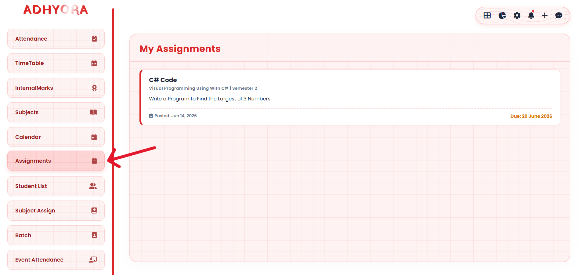
Managing Posted Assignments
- Every assignment you create is listed here as a distinct card.
- The card displays the Topic, the specific Subject & Semester it was assigned to, your detailed Description, and the dates it was posted and due.
- Status Tracking: The system visually tracks urgency. As the deadline approaches, the due date text changes color. Once the deadline passes, the text turns red, and the entire card fades out and is marked as (Closed).
To post new coursework, click the Plus (+) Icon in your top navigation bar. This opens the universal composition modal where you can select the target subject, enter the details, and push a notification instantly to all enrolled students.
Student Directory & Profiles
The Student List provides a searchable directory of all students across the college. Teachers can use this tool to quickly pull up any student's comprehensive academic profile.
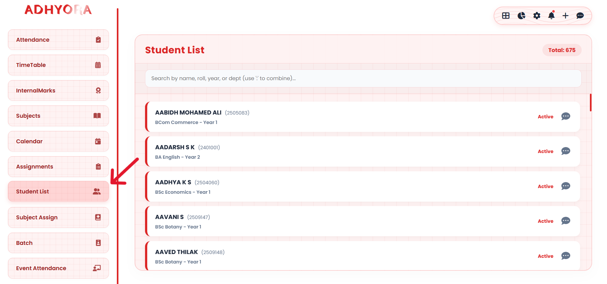
1. Searching for Students
- Smart Search: Use the top search bar to instantly find students by typing their Name, Roll Number, Department, or Year. The list filters dynamically as you type.
- Total Count: The top right corner displays the total number of students currently matched by your search or available in the database.
- Section Label: For a student belonging to a sectioned department, their card shows their assigned Section (e.g. "CS - Year 2 - Section A") right next to their department and year.
Student Academic Dashboard
Click on any student card to open their dedicated profile dashboard, allowing you to monitor their attendance and grading progress.
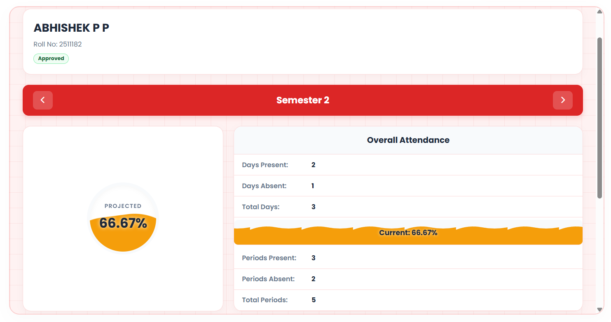
2. Attendance Overview
- Projected Percentage (Wave): The animated circular visualizer calculates the student's Projected Percentage—the attendance score they will achieve if they attend every single remaining class until the end of the semester.
- Overall Stats: The panel on the right provides a hard count of total days and periods the student has been officially marked present or absent, alongside their current exact percentage.
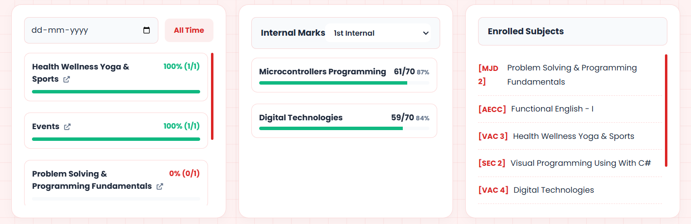
3. Deep-Dive Metrics
- Subject-Wise Attendance: The left box breaks down attendance individually for every enrolled subject.
- Use the Date Picker to filter the list and see exactly which classes the student attended on a specific day, or click All Time for their cumulative averages.
- Time Capsule Ledger: Clicking on any subject card in the attendance list opens a detailed ledger popup. This reveals the exact date, time, and period they were marked Present (P) or Absent (A), and which teacher submitted the record.
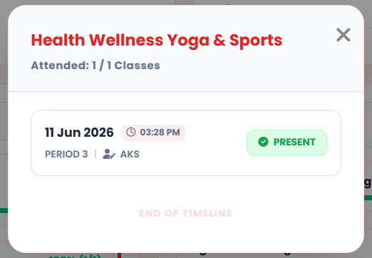
- Internal Marks: The center box displays the student's uploaded test scores. Use the dropdown to toggle between different exam phases (e.g., 1st Internal vs. 2nd Internal) if data is available.
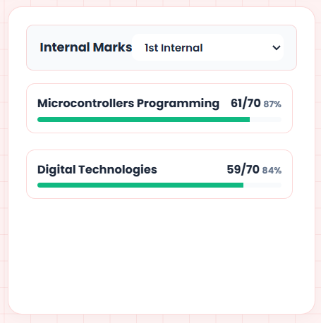
- Enrolled Curriculum: The right box lists the student's official syllabus, displaying every subject they are taking grouped by category tags (MJD, AECC, VAC, etc.).
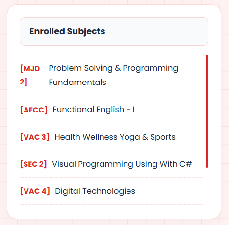
Medical Leave Management (HOD Exclusive)
If you are the HOD, a red medical-notes icon appears next to every student in your own department within the Student Directory list. Use this to officially record when a student is on medical leave, so their attendance is not unfairly penalized.
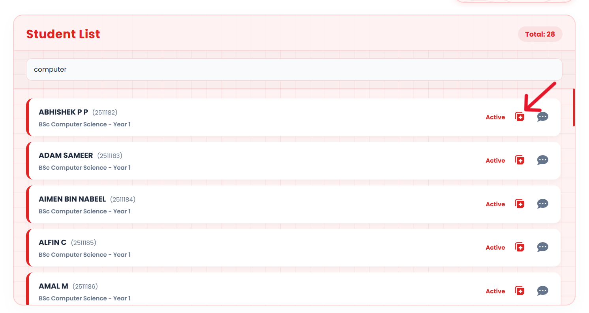
1. Recording a Leave Period
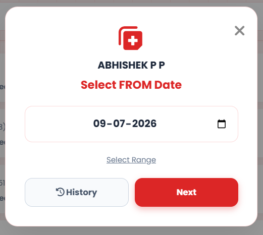
- Tap the medical-notes icon on a student's card to open the panel directly (you don't need to open their full profile first).
- Select FROM Date: Pick the first day of the leave and click Next.
- Select TO Date: Pick the last day of the leave and click Save Leave. For a single day, simply pick the same date for both steps.
2. Viewing & Deleting History
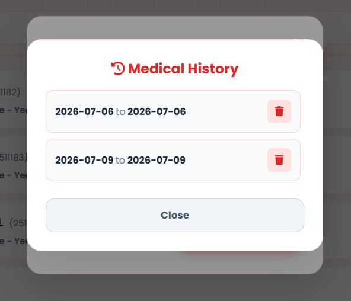
- Click the History button inside the Medical Leave panel to view every leave period ever recorded for that student, listed as From → To date ranges.
- Click the red trash icon next to any record to delete it. You'll be asked to confirm the exact date range before the record is permanently removed.
- Deleting a record immediately removes the MEDICAL lock from that student's attendance rows going forward.
Student Subject Allocation (HOD)
If you hold HOD privileges, the Subject Allocation tool lets you enrol your department's students into Electives, Labs, and other category-based subjects for a given semester (e.g. deciding which of your OE/SEC options each student takes).
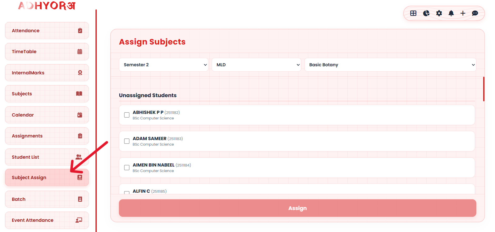
1. Selecting the Target Group
- Semester: Choose the active Odd or Even semester from the top dropdown.
- Category: Choose the subject category (e.g., OE, SEC, MCC). Only categories with subjects offered in the selected semester appear here.
- Subject: Once a category is chosen, pick the specific subject you want to assign students to.
2. Assigning & Removing Students
- Students already enrolled in this category are grouped into accordion cards named after their assigned subject. Everyone else appears under Unassigned.
- To Assign: Tap one or more students under Unassigned to select them (they highlight red), then click the Assign button at the bottom.
- To Remove: Tap one or more students inside an existing subject group, then click the Remove button to un-enrol them from that subject.
- You cannot select Unassigned and already-assigned students at the same time — the action button will show Conflict and stay disabled until your selection is one or the other.
- Click Confirm on the popup to save your changes. The list refreshes instantly to reflect the new grouping.
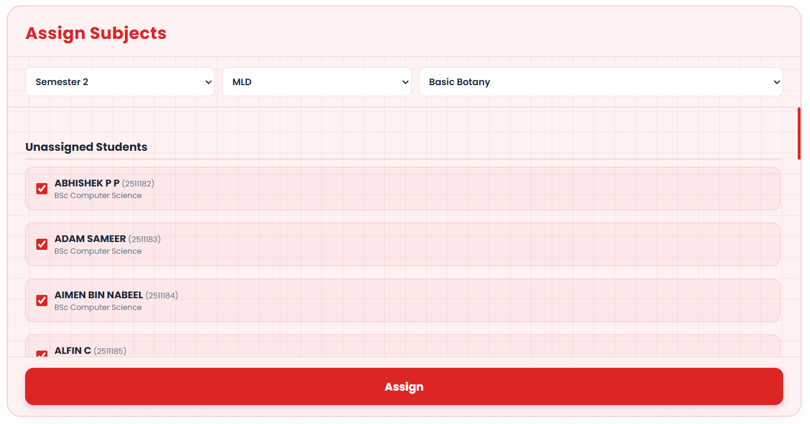
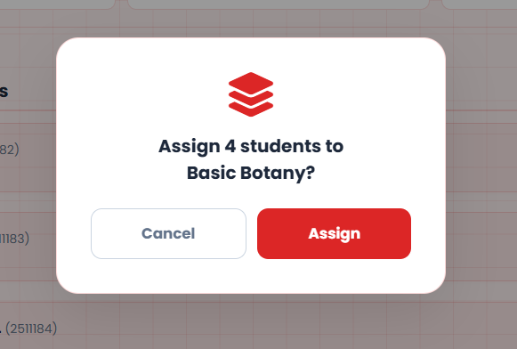
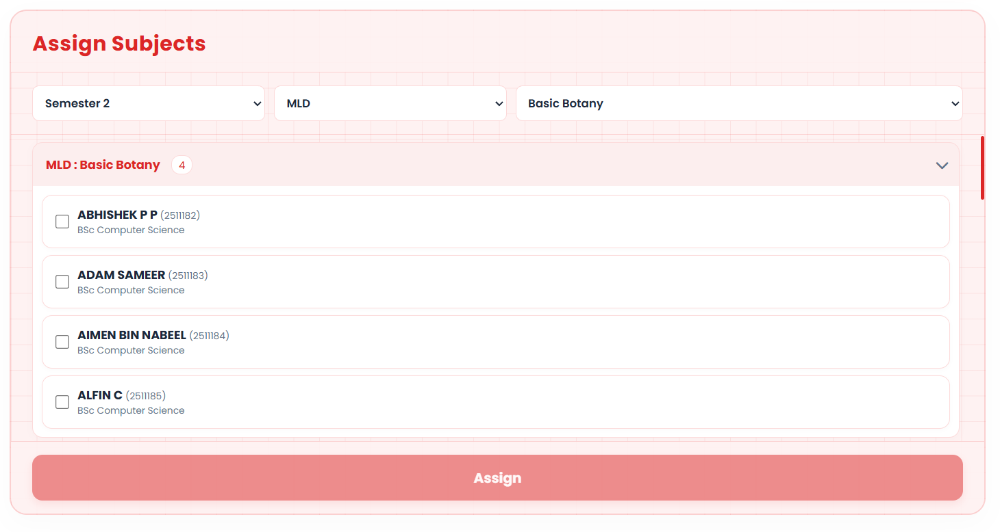
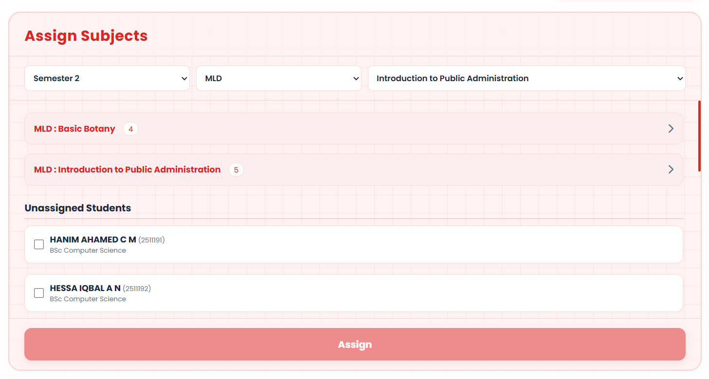
- Principal Override Lock: If the Principal personally assigned a student to a subject, that student's card shows a padlock icon and cannot be changed from the Teacher Portal.
- 24-Hour Edit Window: Assignments you make yourself can only be edited or removed within 24 hours of creating them. After that window closes, the card locks automatically to protect finalized records.
Manage Sections (HOD)
If you hold HOD privileges, the Sections panel (labelled "Sections" in the navigation menu) lets you split your department's year-groups into smaller Sections (e.g. Section A, Section B, Section C) — for example when a single year is too large to timetable, attend, and grade as one cohort. Once sections exist for a year, Attendance Marking, Timetable Assignment, and Data Export all become section-aware automatically for that department/year.
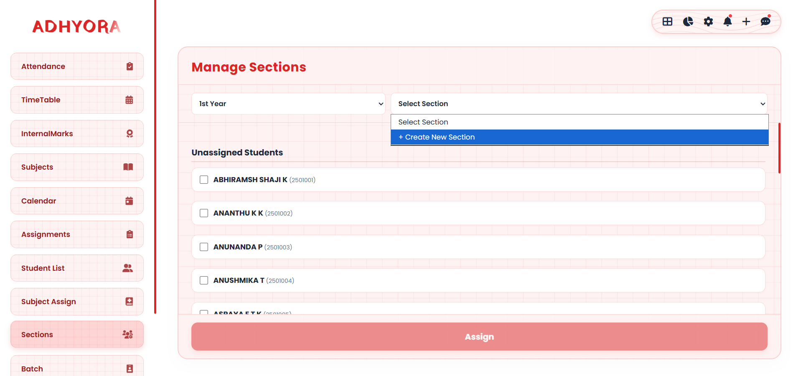
1. Selecting the Target Group
- Year: Choose the target academic year (1st–4th Year) from the top dropdown. Every student in your department for that year loads below, grouped by their current section.
- Students with no section yet appear under an Unassigned Students heading at the bottom of the list.
2. Assigning & Removing Students
- To Assign: Tap one or more students under Unassigned Students to select them, choose the target section from the dropdown (or choose + Create New Section and type a name like "A", "B", or "C"), then click the red Assign button at the bottom.
- To Remove: Tap one or more students inside an existing Section group, then click the red Remove button to un-assign them back to Unassigned.
- Just like Subject Allocation, you cannot select Unassigned and already-assigned students in the same action — the button shows Conflict and stays disabled until your selection is one or the other.
- Confirm the popup to save. The list refreshes instantly to reflect the new section groupings.
Promotion Holds (HOD)
If you hold HOD privileges, the Promotion Holds panel lets you flag students who should not be promoted to the next academic year — for example due to attendance shortage, arrear (failed) subjects, unpaid fees, or disciplinary issues — and clear those holds once the issue is resolved.
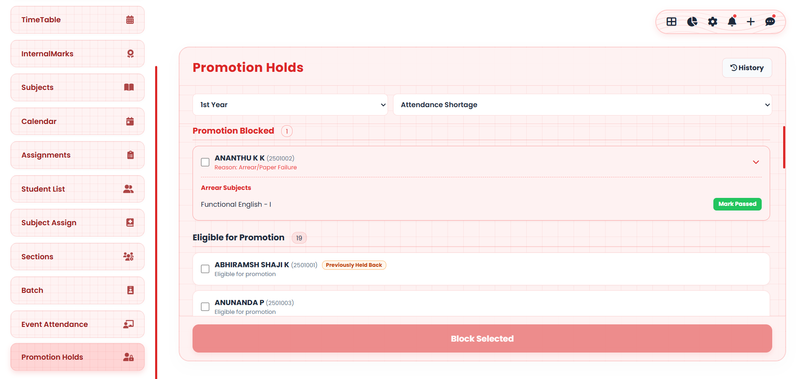
1. Blocking a Student's Promotion
- Year: Choose the academic year to review. Students load into two groups: Promotion Blocked and Eligible for Promotion.
- Reason: Pick a reason from the dropdown — Attendance Shortage, Arrear/Paper Failure, Fee Due, Disciplinary, or Other (which reveals a free-text box for a custom reason).
- Select one or more students under Eligible for Promotion, then click the red Block Selected button.
Because this reason requires recording exactly which subjects the student failed, you can only select one student at a time when this reason is chosen. Confirming opens a Subject Picker listing that student's enrolled subjects for their current semester — check every subject they need to clear, then confirm the block.
2. Clearing a Hold
- Select one or more students under Promotion Blocked, then click the red Clear Hold button and confirm.
- Arrear Subjects: A student blocked for Arrear/Paper Failure shows an expandable arrow revealing their list of pending subjects. Click Mark Passed next to a subject once the student clears it — the subject is struck through with a green checkmark.
- Once every arrear subject on a student's list is marked passed, a confirmation popup automatically offers to clear their promotion hold entirely.
- A student who was previously held back (and later cleared) carries a small "Previously Held Back" badge on their card going forward, for context.
3. Viewing History
- Click the History button at the top right of the panel to open a calendar-year log of every block, clear, and subject-cleared action for your department, newest first.
- Use the year dropdown inside the History modal to look back at previous calendar years.
Subject Batch Viewer
The Batch Viewer panel allows teachers to quickly check how their assigned subjects are divided into structural batches (e.g., for practical labs or smaller tutorial groups) across the college.
Viewing Batches & Rosters
- Select Semester & Subject: Use the top dropdowns to select the target semester and one of the subjects from your official teaching list.
- Check Batches: If the HOD or Principal has split the subject into multiple batches, they will appear here as individual accordion cards.
- Batch Details: Each card displays the total student count for that specific batch, along with the officially assigned teacher and room designation.
- View Students: Click on any batch card to expand it and reveal the exact roster of students assigned to that group.
Event Attendance Requests
The Event Attendance panel allows teachers (like NSS Program Officers, NCC Commanders, or Sports Coordinators) to request official attendance overrides for students participating in special duties during regular class hours. It supports two modes: a quick Single Period request for one class period, or a Camp request for multi-day events like NCC camps, treks, or tournaments.
1. Creating a Single-Period Event Request
- Select Date: By default, the panel loads today's date. Click the date button at the top right to open the Date Picker if you need to jump back and request attendance for an event that occurred in the past.
- Select Period: Choose the specific period the event took place during.
- Event Name: Type a clear, descriptive name for the duty (e.g., "NSS Duty", "Inter-College Football").
- Find Students: Click the red Find Students button to open the global search modal.
- Quick Picks — Library / PT: For single-period requests, two quick-tap buttons, Library and PT, instantly fill the Event Name field for these two common, low-risk duties. Requests named exactly "Library" or "PT" this way skip your college's Approval Mode entirely (the Save button changes to Mark Attendance) and finalize instantly, regardless of whether the college is set to Strict or Auto-Approve mode. The quick-pick buttons are hidden automatically when Camp mode is on, since they only apply to single-period requests.
Camp Mode (Multi-Day Events)
For duties that span more than one day, flip on the Camp toggle at the top of the panel. This switches the panel from the single Period dropdown to a full date-and-time range, so the whole camp duration is covered in one request.
1. Setting the Camp Window
- Enable the Camp toggle. The Period dropdown disappears and is replaced by Start Date, Start Time, End Date, and End Time fields.
- Enter the exact window the camp runs for. The End Date & Time must be strictly after the Start Date & Time, or the system will block saving.
- Enter the Event Name, then use Find Students to build the participant roster exactly as you would for a single-period request.
2. Marking Multiple / New Camps
- As soon as Camp mode is on, a red Camp Selector dropdown appears at the top of the form, listing every camp you've already created that touches the currently selected calendar date.
- To start a brand-new camp (a different group or duty running on the same or overlapping days), choose ➕ Create New Camp from this dropdown — you get a fresh, blank form without disturbing any camp you already saved.
- To review or check an existing camp, simply select it from the dropdown; its name, dates, times, and roster load back instantly.
3. Finding & Locking Participants
- Use the search bar to find students across the entire college by typing their Name, Roll Number, Department, or Year.
- Check the boxes next to the students who participated. You can search multiple times and keep selecting students; the system remembers your selections.
- Click the Add Selected to Event button to drop them into your staging cart.
- If a student is already part of another teacher's event or camp whose date/time window overlaps with the one you're building, their search card shows a grey padlock icon and cannot be selected — the card also displays which event/camp and teacher currently holds them.
- If a student is already sitting in your own unsaved cart and gets claimed elsewhere before you save, their cart card turns red with a Conflict warning naming the teacher who claimed them. You must remove them from your cart before you can save.
4. Reviewing & Submitting
- Review Roster: All selected students appear in your staging list (for Camps, this list is shared with the Camp Selector dropdown above). If you accidentally added someone, click the red Trash (Dustbin) icon next to their name to remove them.
- Submit: Click the large action button at the bottom of the screen to save the request.
- Strict Approve Mode — the button reads Send to Principal. Your request is saved as Pending and only overwrites the students' attendance once the Principal opens their dashboard, verifies the duty, and clicks Accept.
- Auto-Approve Mode — the button reads Mark Event & Auto-Approve. Submitting instantly finalizes the attendance override for all selected students with no Principal action required. The Principal can still see every auto-approved event on their side at any time.
- Camps lock immediately the moment you save — the Event Name, dates, times, Find Students button, and Save button all disable instantly, and a "Locked (Cannot be edited)" notice appears.
- Single-Period requests stay editable while Pending, but auto-lock 24 hours after submission even if the Principal hasn't reviewed it yet. Once a request reaches Accepted status, it locks permanently regardless of mode.
System Notifications
Clicking the Bell Icon in the top navigation bar opens the System Inbox. This panel displays global updates, maintenance alerts, and official announcements directly from Adhyora or your administration.
Quick Add Assignment
Clicking the Plus (+) Icon in the navigation bar opens a universal quick-create modal. This allows you to post an assignment instantly without leaving your current screen.
- Target Audience: Select the Target Year and Semester.
- Course Details: Select the Subject from the dropdown.
- Content: Enter the Topic Title and full Description/Instructions.
- Deadline: Pick the Due Date from the calendar popup.
- Post: Click the red Post Assignment button. The assignment will immediately be pushed to the students, and you can track its progress in the Assignments panel.
Inbox & Broadcasts
Clicking the Chat Icon in the navigation bar opens the Messages panel, your central communication hub for viewing sent and received messages.
1. Viewing Messages
- The inbox aggregates both incoming messages and your sent history. Each card displays the sender/recipient name, time, and message type.
- Read Receipts (Blue Ticks): For direct, personal messages, a double-tick icon will turn blue when the recipient has opened and read the message.
- Broadcasts: Mass announcement messages do not track individual read receipts. They are identified visually by a pushpin icon or lack of blue ticks.
2. Composing Messages
You can send targeted push notifications and messages directly from this panel.
- Click the red Compose button at the top right.
- Recipients: Check the boxes to send to the Principal, Teachers, or Students. You can select multiple groups at once.
- Smart Filtering: Use the dropdown menus to narrow your audience by specific Departments and Years to ensure the message only reaches the intended targets.
- Enter your Title and Message, then click Send Message.
Settings & Security
Click the Gear Icon in the top navigation bar to open your configuration menu. This panel controls your app experience, security settings, and HOD data exports.
Profile & Support
- Profile: Displays your Name, Email, Department, and HOD status (if applicable).
- Help & Legal: Quick links to Contact Support, visit the Pixelaks Technologies website, and review the Privacy Policy or Terms & Conditions.
App Toggles
- Push Notifications: Enable or disable push notifications delivered directly to your device.
- UI Sounds: Toggle the cinematic system sound effects on or off.
Themes & Appearance
- Click Themes to open the Appearance popup.
- Toggle between Light Mode and Dark Mode to reduce eye strain.
Security & Device Management
- Active Sessions (Devices): View all devices currently logged into your account. Click the red Kick button to instantly revoke access for unrecognized or old devices.
- Enable Biometrics (App Lock): Toggle this on to link your device's native fingerprint scanner or Face ID to the app, allowing you to bypass typing the 4-digit PIN for sensitive actions.
- Reset Security PIN: Click to change your 4-digit master PIN. You must re-authenticate with your account password before setting a new PIN.
- Password Resets: Sends a secure password reset link directly to your registered email address.
Department Data Export (HOD Exclusive)
If you have HOD privileges, a special Export Data button will appear at the bottom of your settings menu. This tool allows you to download comprehensive departmental records as clean, Excel-ready `.CSV` files.
- Click Export Data in the settings menu.
- Select the target Semester from the dropdown.
- Select the Report Type you need (Internal Marks, Attendance Stats, or Daily Logs).
- Section (Multi-Section Departments Only): A Section dropdown appears if the corresponding year has been split into sections. Choose All Sections (Combined) for one file with everyone, Section X Only to export just that section, or Each Section Separately to download one file per section in a single click.
- Click Download CSV. The system will compile the data and save the file directly to your device.
Available Export Types
1. NEP Internal Marks
Generates a matrix of test scores, assignment grades, and auto-calculated attendance marks for every student in the department.
2. Attendance Statistics
Extracts the total periods conducted versus periods attended. It provides an overall percentage summary, followed by individual subject-by-subject percentage breakdowns.
3. Daily Logs
Generates a raw, period-by-period attendance log for every date in the semester, showing each student's P/A/M mark for every period alongside their overall Daily Status (Present/Absent).